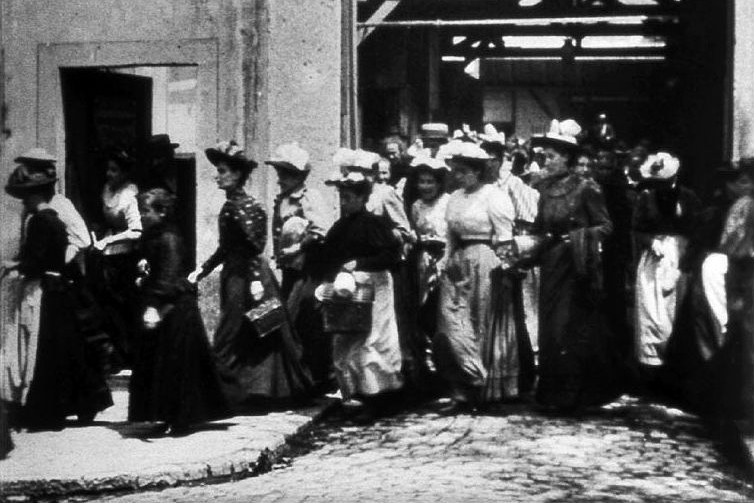
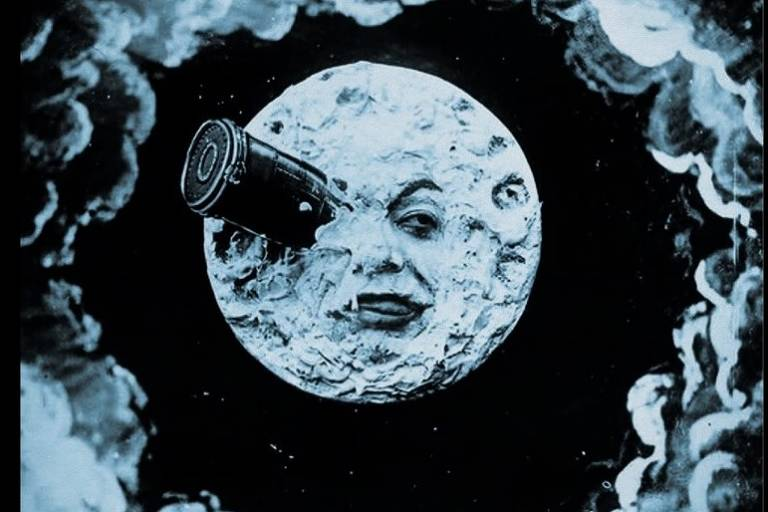
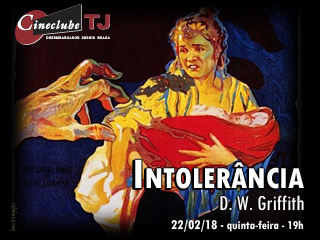
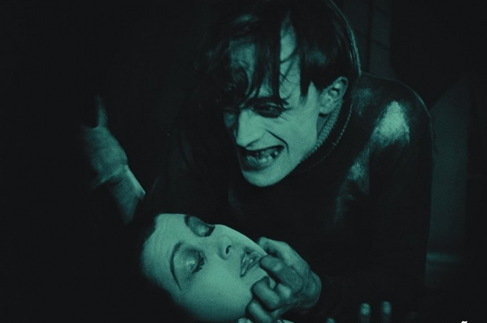

-

1895 - "Sortie de L’usine Lumière à Lyon"
Direção: Louis e Auguste Lumière / Duração: 45s
O primeiro filme foi feito por dois irmãos, Louis e Auguste Lumière, que o projetaram pela primeira vez em um café em Paris. No curta, assim como no título original ("A saída dos operários da fábrica Lumière em Lyon") é sobre empregados deixando a tal fábrica! Quem nos dias de hoje acreditaria que um vídeo de aspecto simples de 45s ficou para a história?
-

1902 - Viagem à Lua
Gênero: Ficção Científica, fantasia / Direção: Georges Méliès / Duração: 12min
Se trata sobre um relato fantástico de uma expedição lunar onde um grupo de cientistas se reúnem em um grande canhão, sendo lançados para a Lua. Assim, caem nas mãos de seus habitantes, os Selenitas.
Pioneiros do cinema como Louies e Auguste viam ali uma oportunidade de relatar a realidade, enquanto George via como um novo meio de fazer mágicas. Os curtas do mesmo eram criados somente para entreter pessoas que lotavam os Bulevares de Paris. Repleto de espectros, mefistofélicos e coristas, seus filmes iniciais apresentavam truques simples que evoluíram para histórias imaginativas e audaciosas pelo uso criativo da câmera.
-

1916 - Intolerância
Gênero: Épico histórico / Direção: D. W. Griffith / Duração: 3h 17m
Um dos filmes mais influentes realizados, é um épico no verdadeiro significado da palavra. Com cenários elaborados e inúmeros figurantes, não foi o primeiro filme a usar técnicas como travelling e close-up, mas executou-os com tanta maestria que muitos o consideram o pai do cinema moderno. O filme fez sucesso, contudo foi criticado por muitos devido ao racismo aberto em favor da escravidão.
Quatro histórias de intolerância se entrelaçam no filme, cada um em uma cor diferente se ligando pela imagem unipresente de uma mãe. Em uma de suas cenas aparece balançando um berço que simboliza as gerações que se sucedem, com a legenda: "Out ofd the cradle endlessly rocking" ("Desde o berço, num perpétuo balançar"), como a sugerir que nada muda.
-

1920 - O Gabinete do Dr. Caligari
Gênero: Terror / Direção: Robert Wiene / Duraçâo: 1h20min
Descrito como o primeiro longa-metragem de horror, com um cenário engenhoso em seu set (ainda hoje tendo ambientes "irreais") é uma de suas mais marcantes características. Porém, um dos verdadeiros motivos que o fez ser citado nessa lista foi um elemento sutil de terror psicológico que ainda não tivera sido usado no cinema. O narrador não confiável.
Originalmente os roteiristas (Hans Janowitz e Carl Mayer) escreveram a história como uma acusação ao governo da Alemanha na Primeira Guerra Mundial, em que, Caligari é o vilão que leva um sonâmbulo a cometer um assassinato. Conforme a produção avançava, a história se tornava mais complexa que acabou conduzindo a mais um marco do cinema: O final surpresa.